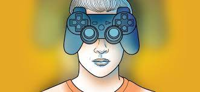

SINTOMAS DO VÍCIO
Jogar mais tempo que o razoável, com prejuízo de outras
ativaidades e de interação social. O vício se caracteriza por meio da perda de controle sobre o tempo
dos jogos, a prioridade dada à diversão em detrimento das demais atividades e das áreas que interessam
à vida pessoal e à sociabilidade de quem joga.
- Jogar mais tempo que o razoável, com prejuízo de outras atividades e de interação social.
- Problemas no rendimento escolar ou profissional.
- Diminuição no tempo de sono.
- Aumento dos conflitos familiares.
- Irritação quando fica afastado do jogo (sinal de abstinência)
SINTOMAS DA CRISE DE ABSTINÊNCIA
- apatia;
- delírios;
- irritabilidade;
- agressividade;
- confusão mental;
- alterações no sono;
- aumento do apetite;
- problemas de memória;
A tecnologia está aí para nos beneficiar em tarefas comuns do dia a dia
e em outros aspectos da vida,
certo? Depende. Essas vantagens só podem ser sentidas se o uso dos dispositivos digitais e
suas ferramentas for moderado.
Não à toa, a Organização Mundial da Saúde (OMS)
classificou o vício em jogos eletrônicos como um transtorno mental.